TP Formation visualisation des données UR9
Marc Thevenin
04/09/2020
- Le TP suit l’ordre des graphiques présentées dans la partie “visualisation des données avec Stata”
- Graphiques utilisés
- histogramme, densité:
histogram-kdensity/arealine - boxplot:
graph box/grap hbox - Nuage de points:
scatter - heatmap avec hexagones:
hexplot - Barres pour les variables catégorielles:
catplot-spineplot
- histogramme, densité:
- J’ai utilisé trois couleurs simple pour une grande partie du document (red, blue, yellow),
colorpaletteetgrstylesont utilisés tardivement - Les personnes qui n’ont pas, au moins, la version 15 de stata, ne peuvent pas utiliser les effets de transparence:
option_couleur(couleur%#)
use base4var, clear1 revenus 2012 ou 2016: histogramme - densité
1.1 Histogramme
Premier graph du program
PROGRAMME
histogram r16, normal 
Nombre de barres = 20
PROGRAMME
histogram r16, bin(20)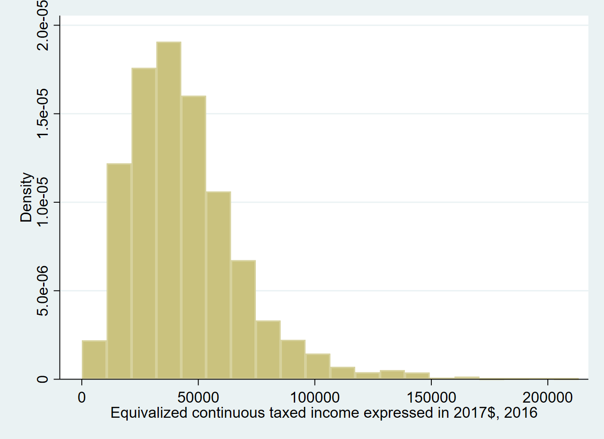
Changements couleurs des barres et contour
PROGRAMME
* barre
histogram r16, bin(20) fc(blue)
PROGRAMME
* barre et contour même couleur
histogram r16, bin(20) color(blue)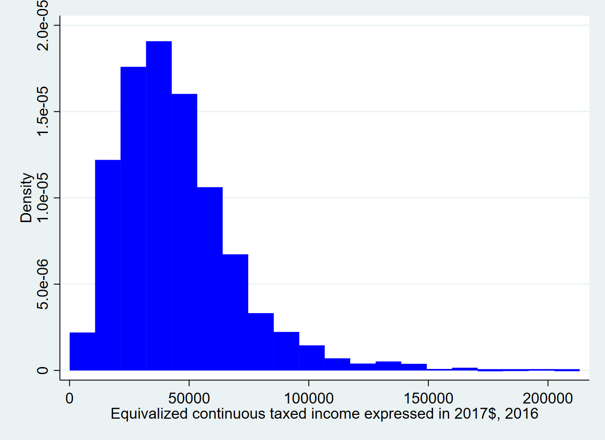
PROGRAMME
* barre et contour couleurs différentes
histogram r16, bin(20) color(blue)Modification de la transparence (stata 15 minimum) ou de la saturation (intensity)
PROGRAMME
* 60% transparence
histogram r16, bin(20) fc(blue%60) lc(white)
PROGRAMME
* .6 saturation
histogram r16, bin(20) fc(blue*.6) lc(white)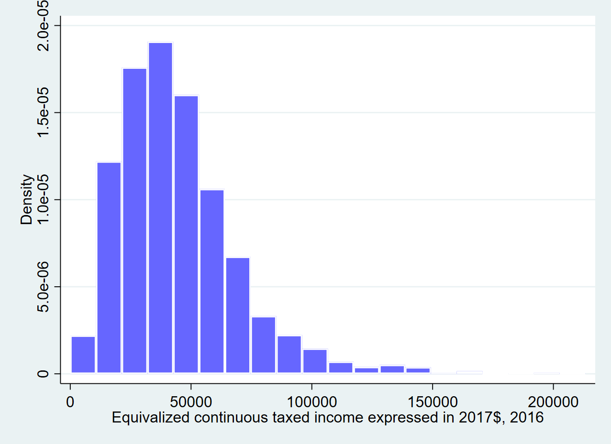
En ajoutant quelques options:
- Report des %
- valeur de y en horizontal
- modification du grid y (couleur et épaisseur)
- note pour la définition du revenu et non le titre de x - en italique
- titre positionné à 11 heures, en gras
PROGRAMME
tw histogram r16, percent fc(blue%60) lc(black) lw(vthin) bin(20) ///
title("{bf:Revenus 2016}", pos(11)) ///
ylabel(, angle(0) glc(gs3) glw(.1)) ///
xtitle("") ///
note("{it:Equivalized continuous taxed income expressed in 2017 $}", size(2)) ///
graphr(color(white)) plotr(color(white))
1.2 Densité
Directement avec kdensity
PROGRAMME
kdensity r16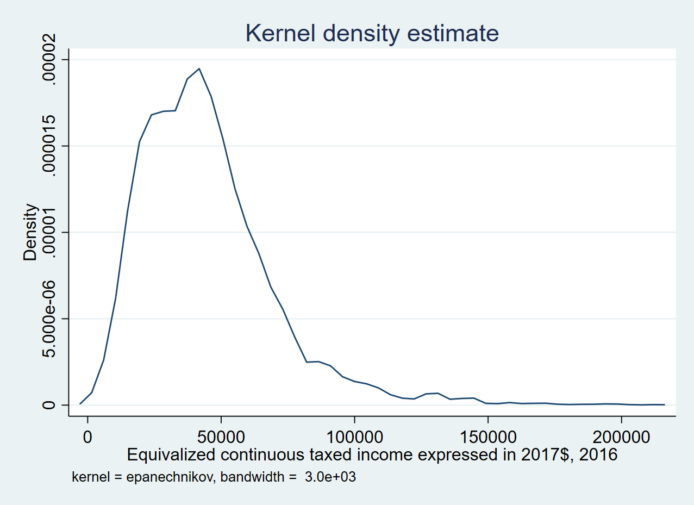
PROGRAMME
kdensity r16, n(200) kernel(gauss)
Avec kdensity (création variable) + area/line
Création des variables
PROGRAMME
kdensity r16, gen(x d) n(200) kernel(gauss) nographGraphique
PROGRAMME
tw line d x, recast(area) color(blue%60)ou
PROGRAMME
tw area d x, color(blue%60)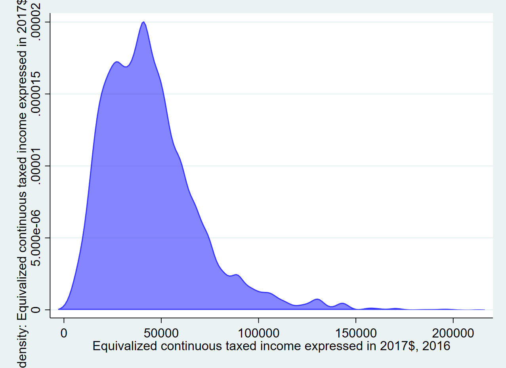
En ajoutant quelques options:
- valeur de y en horizontal et changement du format
- modification du grid y (couleur et épaisseur)
- note pour la définition du revenu et non le titre de x - en italique
- titre positionné à 11 heures, en gras
PROGRAMME
tw area d x, fc(blue%60) lc(black) lw(.5pt) ///
ytitle("Density") xtitle("") ///
title("{bf:Revenus 2016}", pos(11)) ///
ylabel(, angle(0) glc(gs3) glw(.1) format(%9.5f)) ///
note("{it:Equivalized continuous taxed income expressed in 2017 $}", size(2)) ///
graphr(color(white)) plotr(color(white))
Revenus 2012 et 2016
Superposition [avec macros]
PROGRAMME
capt drop _d* _x*
local c1 "red%50"
local c2 "blue%50"
local i=1
foreach v of varlist r12 r16 {
local j = `i++'
local y: subinstr local v "r" ""
kdensity `v', gen(_x`v' _d`v') n(200) kernel(gauss) nograph
local area `area' area _d`v' _x`v', fc(`c`j'') lc(black) lw(vthin) ||
local ord `ord' `j' "20`y'"
}
tw `area', legend(order(`ord') pos(1) region(lc(%0))) ///
ytitle("Density") ///
title("Revenus", pos(11)) xtitle("") ///
ylabel(, angle(0) glc(gs3) glw(.1) labs(2) format(%9.5f)) ///
note("{it:Equivalized continuous taxed income expressed in 2017 $}", size(2)) ///
graphr(color(white)) plotr(color(white))
Type beans [sans macro]
PROGRAMME
gen _dr16b = -_dr16
tw area _dr12 _xr12, fc(red%60) lc(%0) ///
|| line _dr12 _xr12, lc(red) lw(.1) ///
|| area _dr16b _xr16, fc(blue%60) lc(%0) ///
|| line _dr16b _xr16, lc(blue) lw(.1) ///
legend(order(1 "2012" 3 "2016") pos(1) region(lc(%0))) ///
ytitle("Density") ///
title("Revenus", pos(11)) xtitle("") ///
ylabel(, labc(%0) glc(%0) tlc(%0)) ///
note("{it:Equivalized continuous taxed income expressed in 2017 $}", size(2)) ///
graphr(color(white)) plotr(color(white))
2 Revenus et statut matrimonial: histogrammes - densité - box
2.1 histogrammes
Superposition: peu lisible
PROGRAMME
local leg 1 "Married or pacsed" 2 "Cohabitant" 3 "Isolated"
tw histogram r16 if ms16==3, bin(20) percent fc(yellow%50) lc(black) lw(vvvthin) start(0) ///
|| histogram r16 if ms16==2, bin(20) percent fc(blue%50) lc(black) lw(vvvthin) start(0) ///
|| histogram r16 if ms16==1, bin(20) percent fc(red%50) lc(black) lw(vvvthin) start(0) ///
|| , legend(order(`leg')) 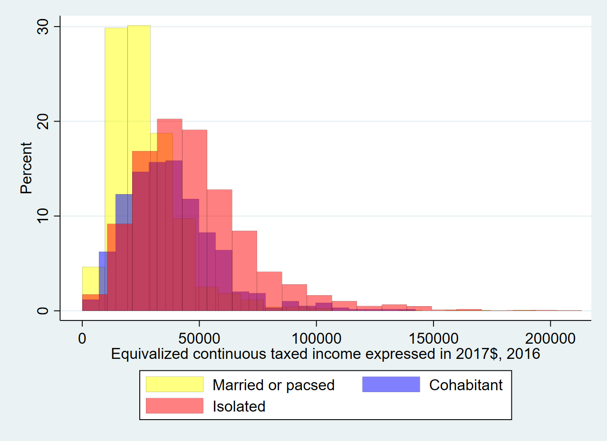
Facettes avec en arrière plan les distributions des autres modalités
PROGRAMME
local bgc plotr(color(white)) graphr(color(white))
local note note("{it:Equivalized continuous taxed income expressed in 2017 $}", size(2))
tw histogram r16 if ms16==1, bin(20) percent fc(red%20) lc(%0) lw(vvthin) start(0) ///
|| histogram r16 if ms16==2, bin(20) percent fc(blue%20) lc(%0) lw(vvthin) start(0) ///
|| histogram r16 if ms16==3, bin(20) percent fc(yellow%70) lc(black) lw(vvthin) start(0) ///
||, legend(off) title("Isolated", pos(11)) xtitle("") `bgc' `note' name(g1, replace)
tw histogram r16 if ms16==3, bin(20) percent fc(yellow%20) lc(%0) lw(vvthin) start(0) ///
|| histogram r16 if ms16==1, bin(20) percent fc(red%20) lc(%0) lw(vvthin) start(0) ///
|| histogram r16 if ms16==2, bin(20) percent fc(blue%70) lc(black) lw(vvthin) start(0) ///
||, legend(off) title("Cohabitant", pos(11)) xtitle("") `bgc' `note' name(g2, replace)
tw histogram r16 if ms16==3, bin(20) percent fc(yellow%20) lc(%0) lw(vvthin) start(0) ///
|| histogram r16 if ms16==2, bin(20) percent fc(blue%20) lc(%0) lw(vvthin) start(0) ///
|| histogram r16 if ms16==1, bin(20) percent fc(red%70) lc(black) lw(vvthin) start(0) ///
||, legend(off) title("Married or pacsed couple", pos(11)) xtitle("") `bgc' `note' name(g3, replace)
graph combine g1 g2 g3 , xsize(20) ysize(7) col(3) ///
note("Equivalized continuous taxed income expressed in 207 $") ///
title("Revenus 2016", pos(11)) plotr(color(white)) graphr(color(white))
2.2 Densités
Création des variables avec kdensity
PROGRAMME
kdensity r16 if ms16==1, kernel(gauss) n(300) gen(x1 d1) nograph
kdensity r16 if ms16==2, kernel(gauss) n(300) gen(x2 d2) nograph
kdensity r16 if ms16==3, kernel(gauss) n(300) gen(x3 d3) nographPlus lisible qu’un histogramme à mon avis
PROGRAMME
local leg legend(order(3 "Married or pacsed" 2 "Cohabitant" 1 "Isolated") pos(7) col(3) region(lc(%0)))
local bgc plotr(color(white)) graphr(color(white))
local note note("{it:Equivalized continuous taxed income expressed in 2017 $}", size(2))
local title title("{bf:Revenus 2016}", pos(11)) xtitle("")
tw area d3 x3, fc(yellow%50) lc(black) lw(vthin) ///
|| area d2 x2, fc(blue%50) lc(black) lw(vthin) ///
|| area d1 x1, fc(red%50) lc(black) lw(vthin) ///
|| , ytitle("") `leg' `bgc' `note' `title'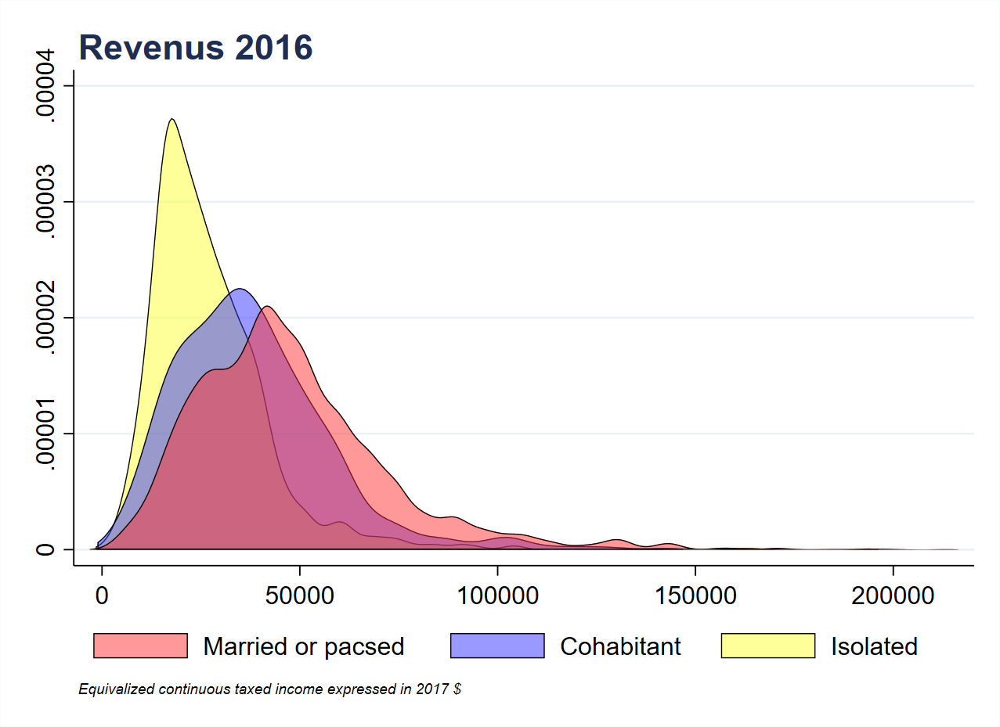
PROGRAMME
local bgc plotr(color(white)) graphr(color(white))
local note note("{it:Equivalized continuous taxed income expressed in 2017 $}", size(2))
tw area d1 x1, fc(red%20) lc(%0) ///
|| area d2 x2, fc(blue%20) lc(%0) ///
|| area d3 x3, fc(yellow%80) lc(black) lw(vthin) ///
||, legend(off) title("Isolated", pos(11)) ///
xtitle("") ytitle("Density") `bgc' `note' name(g1, replace)
tw area d3 x3, fc(yellow%20) lc(%0) ///
|| area d2 x2, fc(red%20) lc(%0) ///
|| area d1 x1, fc(blue%80) lc(black) lw(vthin) ///
||, legend(off) title("Cohabitant", pos(11)) ///
ylabel(, labc(%0)) ///
xtitle("") ytitle("") `bgc' `note' name(g2, replace)
tw area d3 x3, fc(yellow%20) lc(%0) ///
|| area d1 x1, fc(blue%20) lc(%0) ///
|| area d2 x2, fc(red%80) lc(black) lw(vthin) ///
||, legend(off) title("Married or pacsed couple", pos(11)) ///
ylabel(,labc(%0)) ///
xtitle("") ytitle("") `bgc' `note' name(g3, replace)
graph combine g1 g2 g3 , xsize(20) ysize(7) col(3) ///
note("Equivalized continuous taxed income expressed in 2017 $") ///
title("Revenus 2016", pos(11)) plotr(color(white)) graphr(color(white))
2.3 Box
PROGRAMME
graph box r16, over(ms16, descending) 
PROGRAMME
graph box r16, over(ms16, descending) horizontal 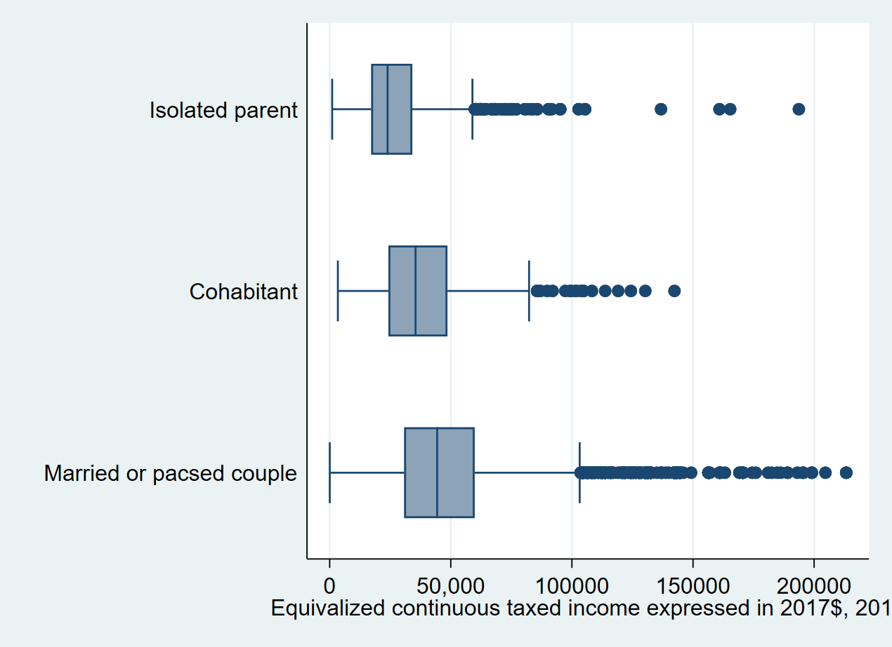
Ajouts d’options pour couleurs différentes (pas obligatoire cas variable statut mat sans dimension ordinale)
PROGRAMME
local bgc plotr(color(white)) graphr(color(white))
local note note("{it:Equivalized continuous taxed income expressed in 2017 $}", size(2))
local title title("{bf:Revenus 2016}", pos(11))
local mops msiz(vsmall) mlc(black) mlw(vthin)
graph hbox r16, over(ms16) asyvar ///
bar(1, fc(red) lc(black) lw(thin)) m(1, mc(red%40) `mops') ///
bar(2, fc(blue) lc(black) lw(thin)) m(2, mc(blue%40) `mops') ///
bar(3, fc(yellow) lc(black) lw(thin)) m(3, mc(yellow%40) `mops') ///
legend(pos(11) row(1) stack region(lw(0)) size(small) symysize(vsmall)) ///
ytitle("") `bgc' `note' `title' 
3 2d: scatter - hexplot
Revenus 2012 et 2016
3.1 Scatter
PROGRAMME
tw scatter r16 r12, mc(red)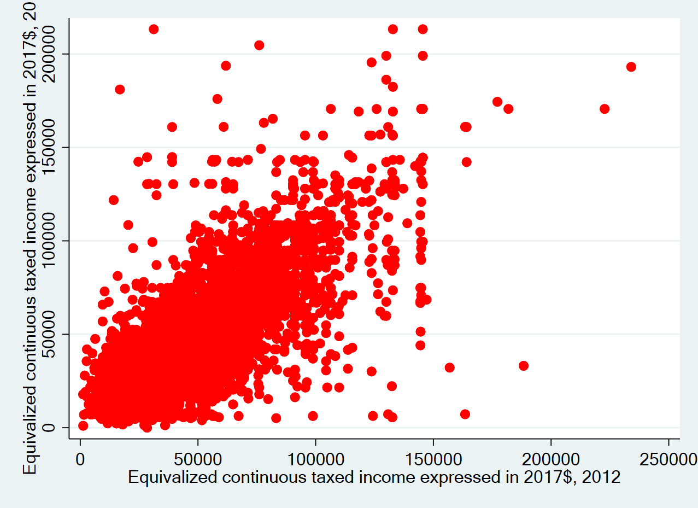
PROGRAMME
tw scatter r16 r12, mc(red) mlc(white)
PROGRAMME
tw scatter r16 r12, msiz(.3) mc(red) mlc(white) mlw(.05)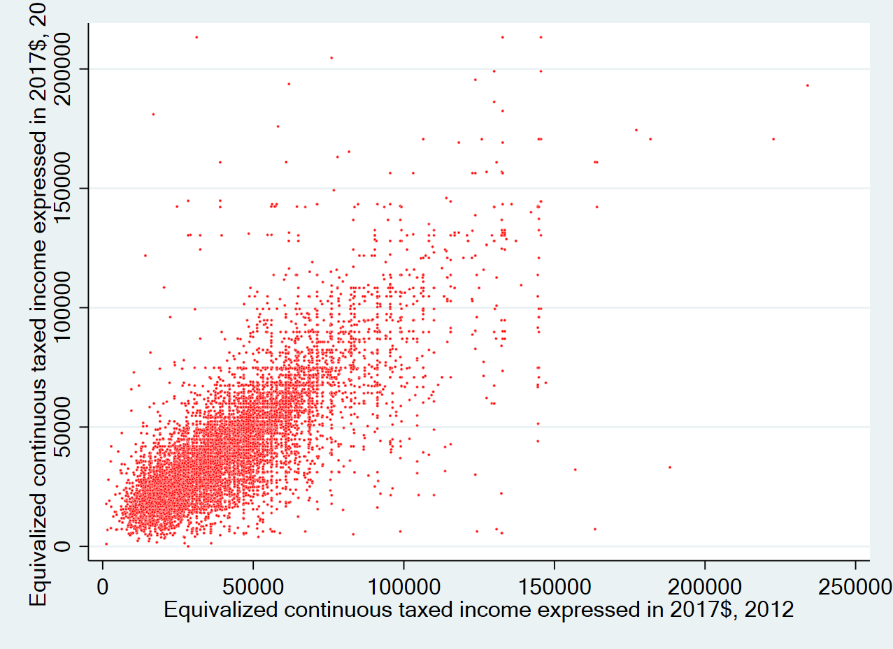
PROGRAMME
tw scatter r16 r12, msiz(.3) mc(red%50) mlc(white) mlw(.05) jitter(2)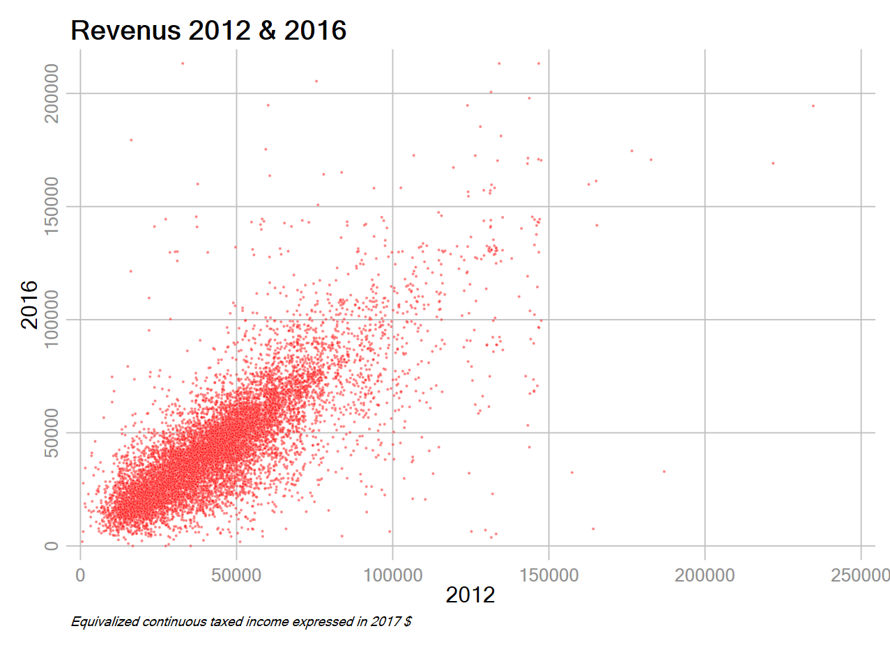
** Par statut matrimonial
Avec transparence
PROGRAMME
local leg legend(order(3 "Married or pacsed" 2 "Cohabitant" 1 "Isolated") pos(11) col(3) region(lc(%0)))
local bg plotr(color(white)) graphr(color(white))
local note note("{it:Equivalized continuous taxed income expressed in 2017 $}", size(2))
local title title("{bf:Revenus 2016}", pos(11)) xtitle("")
local mops msiz(1) mlc(black) mlw(.05) jitter(2)
tw scatter r16 r12 if ms16==1, mc(red%60) `mops' ///
|| scatter r16 r12 if ms16==3, mc(yellow%60) `mops' ///
|| scatter r16 r12 if ms16==2, mc(blue%60) `mops' ///
|| , xtitle("2012") ytitle("2016") `note' `title' `bg' ///
`leg' `title' `note' `bg'
Avec diminution de la saturation
Même programme, juste modifier les couleurs des bulles : par ex mc(red%60) par mc(red*.6)

grstyle
PROGRAMME
graph set window fontface "Microsoft sans serif"
grstyle init
grstyle set mesh, compact
grstyle set legend 11, nobox
local mops msiz(1) mlc(black) mlw(.05) jitter(2)
local bg graphr(color(gs3)) plotr(color(gs3))
local xy glc(gs13) glw(vthin) labc(gs13)
local leg legend(order(1 "Married or pacsed" 2 "Cohabitant" 3 "Isolated") ///
row(1) color(gs13))
local title title("{bf: Revenus 2016}", pos(11) color(gs13))
tw scatter r16 r12 if ms16==1, mc(red*.60) `mops' ///
|| scatter r16 r12 if ms16==3, mc(yellow*.60) `mops' ///
|| scatter r16 r12 if ms16==2, mc(blue*.60) `mops' ///
|| , xtitle("2012", color(gs13)) ytitle("2016", color(gs13)) ///
`title' `leg' `bg' xlabel(, `xy')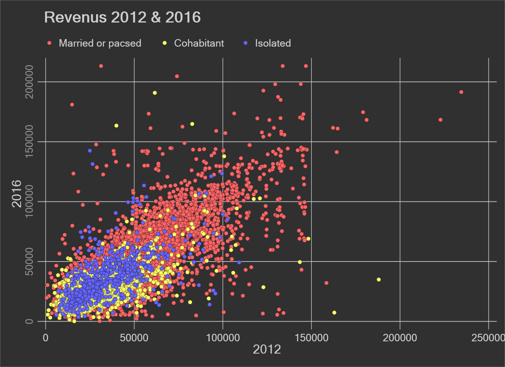
** Facettes**
Le programme suivant peut être automatisé dans une boucle
PROGRAMME
local mops msiz(.7) mlc(gs3) mlw(.1) jitter(2)
local bg graphr(color(gs3)) plotr(color(gs3))
local xy glc(gs13) glw(vthin) labc(gs13)
tw scatter r16 r12 if ms16!=1, mc(gs13%20) `mops' ///
|| scatter r16 r12 if ms16==1, mc(red%70) `mops' ///
|| , xtitle("2012", color(gs13)) ytitle("2016", color(gs13)) ///
`leg' `bg' xlabel(, `xy') legend(off) ///
title("Married or pacsed", pos(11) color(red*.6)) name(g1,replace)
tw scatter r16 r12 if ms16!=2, mc(gs13%20) `mops' ///
|| scatter r16 r12 if ms16==2, mc(blue%70) `mops' ///
|| , xtitle("2012", color(gs13)) ytitle("2016", color(gs13)) ///
`leg' `bg' xlabel(, `xy') legend(off) ///
title("Cohabitant", pos(11) color(blue*.6)) name(g2,replace)
tw scatter r16 r12 if ms16!=3, mc(gs13%20) `mops' ///
|| scatter r16 r12 if ms16==3, mc(yellow%70) `mops' ///
|| , xtitle("2012", color(gs13)) ytitle("2016", color(gs13)) ///
`leg' `bg' xlabel(, `xy') legend(off) ///
title("Isolated", pos(11) color(yellow*.6)) name(g3,replace)
graph combine g1 g2 g3, col(3) xsize(20) ysize(10) ///
graphr(color(gs3)) plotr(color(gs3)) ///
title("{bf: Revenus 2012 & 2016}", pos(11) color(gs13)) ///
note("{it:Equivalized continuous taxed income expressed in 2017 $}", size(2) color(gs13)) 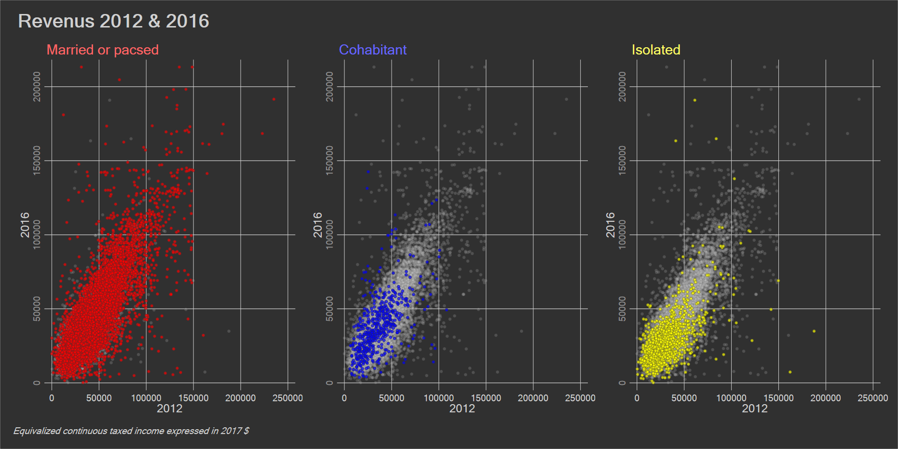
Même graphique, mais avec des couleurs différentes (collection colorbrewer) issues de palettes séquentielles (transition pour le graphique suivant qui nécessite ce type de palettes)
PROGRAMME
local s 5
colorpalette matplotlib, spring select(`s') opacity(60) nograph
local col1 `r(p1)'
colorpalette matplotlib, spring select(`s') nograph
local tcol1 `r(p1)'
colorpalette matplotlib, autumn select(`s') opacity(60) nograph
local col2 `r(p1)'
colorpalette matplotlib, autumn select(`s') nograph
local tcol2 `r(p1)'
colorpalette matplotlib, winter select(15) opacity(60) nograph
local col3 `r(p1)'
colorpalette matplotlib, winter select(15) nograph
local tcol3 `r(p1)'
local mops msiz(.7) mlc(gs3) mlw(.1) jitter(2)
local bg graphr(color(gs3)) plotr(color(gs3))
local xy glc(gs13) glw(vthin) labc(gs13)
tw scatter r16 r12 if ms16==!1, mc(gs13%20) `mops' ///
|| scatter r16 r12 if ms16==1, mc("`col1'") `mops' ///
|| , xtitle("2012", color(gs13)) ytitle("2016", color(gs13)) ///
`leg' `bg' xlabel(, `xy') legend(off) ///
title("Married or pacsed", pos(11) color("`tcol1'")) name(g1,replace)
tw scatter r16 r12 if ms16!=2, mc(gs13%20) `mops' ///
|| scatter r16 r12 if ms16==2, mc("`col2'") `mops' ///
|| , xtitle("2012", color(gs13)) ytitle("2016", color(gs13)) ///
`leg' `bg' xlabel(, `xy') legend(off) ///
title("Cohabitant", pos(11) color("`tcol2'")) name(g2,replace)
tw scatter r16 r12 if ms16!=3, mc(gs13%20) `mops' ///
|| scatter r16 r12 if ms16==3, mc("`col3'") `mops' ///
|| , xtitle("2012", color(gs13)) ytitle("2016", color(gs13)) ///
`leg' `bg' xlabel(, `xy') legend(off) ///
title("Isolated", pos(11) color("`tcol3'")) name(g3,replace)
graph combine g1 g2 g3, col(3) xsize(20) ysize(10) ///
graphr(color(gs3)) plotr(color(gs3)) ///
title("{bf: Revenus 2012 & 2016}", pos(11) color(gs13)) ///
note("{it:Equivalized continuous taxed income expressed in 2017 $}", size(2) color(gs13)) 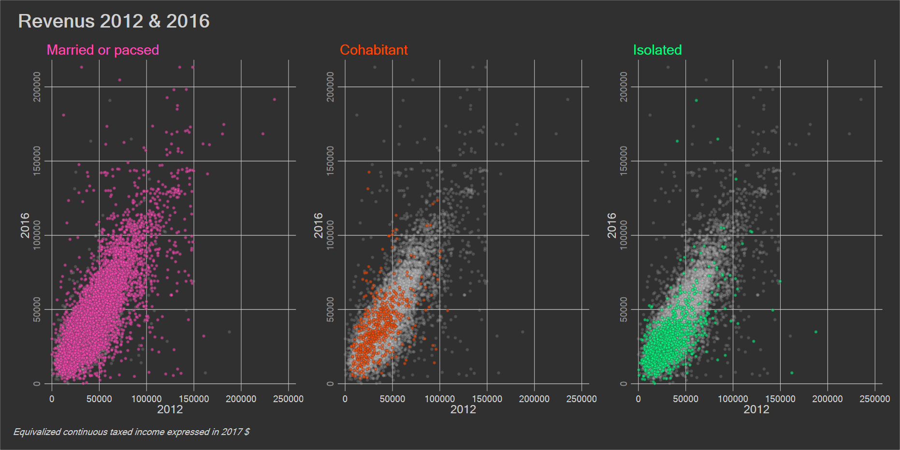
3.2 Hexplot
Rappel principe: histogramme vu du dessus, la couleur de l’héxagone indique la hauteur des barres
PROGRAMME
local var3 ms16
local labn: value label `var3'
local pal spring autumn winter
local i=1
foreach pal2 of local pal {
local j=`i++'
local title`j': label `labn' `j'
colorpalette matplotlib, `pal2' select(1) intensity(2.9) nograph
local bc `""`r(p1)'""'
colorpalette matplotlib, `pal2' select(15) nograph
local tc `""`r(p1)'""'
hexplot r16 r12 if `var3'==`j', color(matplotlib, `pal2') plotr(color(`bc')) p(lw(vvthin) lc(`bc')) graphr(color(`bc')) ///
ytitle("") xtitle("") xlabel(,glw(.1)) ylabel(,glw(.1)) ///
title("`title`j''", color(`tc)') pos(11)) ///
legend(color(`tc') subtitle(,color(`tc')) region(color(`bc'))) name(g`j', replace)
}
graph combine g1 g2 g3, col(3) xsize(20) ysize(6) xcommon ycommon ///
title("{bf: Revenus 2012 & 2016}", pos(11) color(gs8)) ///
note("{it:Equivalized continuous taxed income expressed in 2017 $}", size(3) color(gs8)) ///
graphr(color(255 164 91%30)) 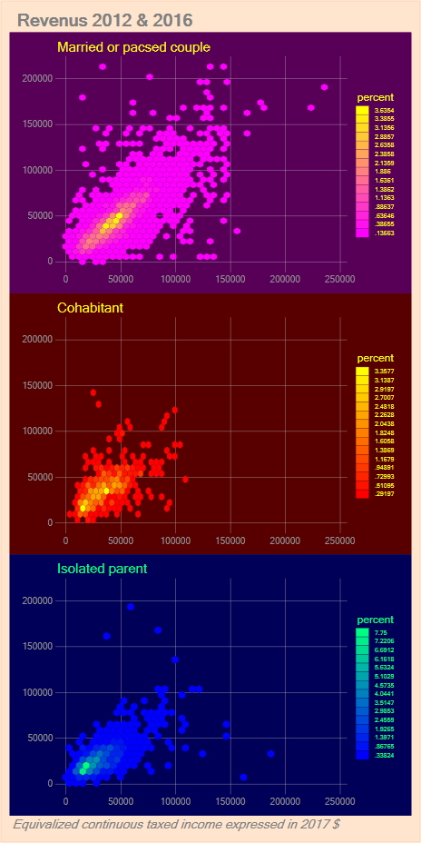
4 Catplot - spineplot
ssc install catplot
ssc install spineplot- Commande de NJ Cox: trop de paramètres par défaut entrée dans sa commande, plusieurs options visent à les retirer
Revenu 2016: appartenance aux décile selon le statut matrimonial.
PROGRAMME
xtile dr16 = r16, nq(10)4.1 Barres
- Pour obtenir des barres empilées, ajouter l’option*
stack
PROGRAMME
grstyle init
grstyle set mesh, compact
grstyle set legend 3, nobox
*grstyle set color viridis, n(10)
colorpalette viridis, select(2 7 12) nograph
grstyle set color "`r(p1)'" "`r(p2)'" "`r(p3)'", n(10)
catplot dr16, /*stack*/ percent(ms16) over(ms16) asyvar ///
legend( pos(3) col(1) title("Déciles", size(small))) ///
l1title("") title("{bf:Revenus 2016}", pos(11)) ///
note("{it:Equivalized continuous taxed income expressed in 2017 $}", size(2)) 
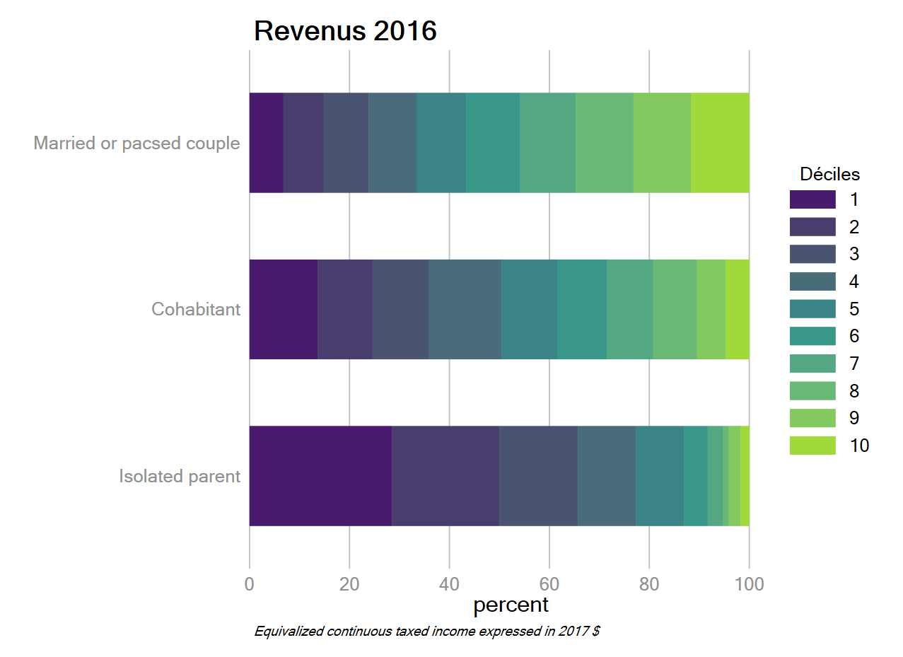
4.2 Merimekko (mosaic plot)
PROGRAMME
colorpalette viridis, select(2 8 13) reverse nograph
grstyle set color "`r(p1)'" "`r(p2)'" "`r(p3)'", n(10)
spineplot dr16 ms16, ///
barall(fi(inten100) blw(vvthin)) ///
legend(title("Déciles", size(small))) ///
xlabel(0 .81 .86 1 , glw(0) axis(1)) ///
xlabel(, glw(0) alt axis(2)) ///
ylabel(0(.1)1, axis(2)) ///
xtitle("", axis(2)) ///
ytitle("Percent", axis(2)) ///
xtitle("Percent", axis(1)) ///
title("{bf: Revenus 2016}", pos(11)) 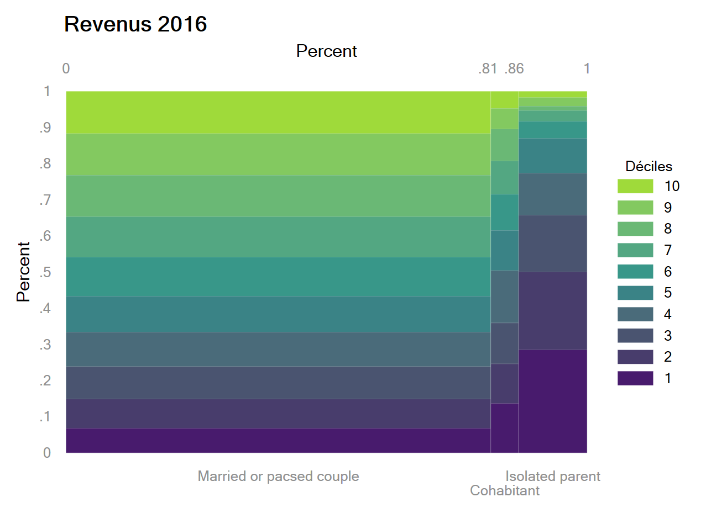
5 EXERCICE
Pour la demi-journée supplémentaire, si vous avez le temps, reproduire le graphique de la slide 19
Les différentes slides indiquent les différentes étapes